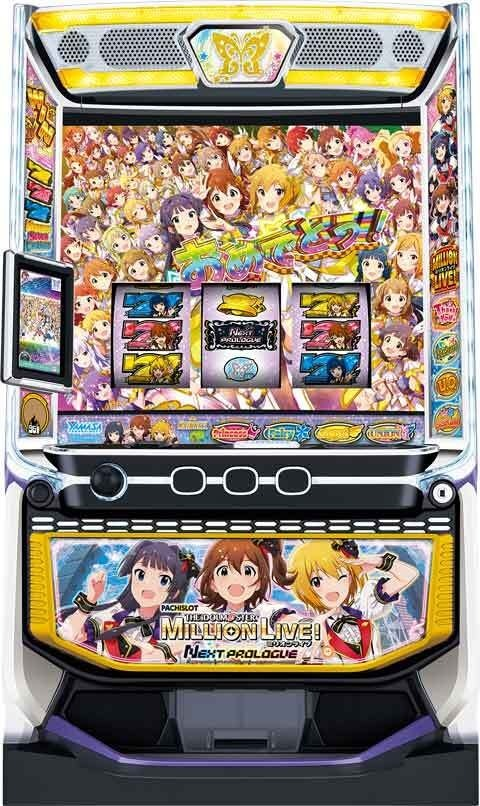
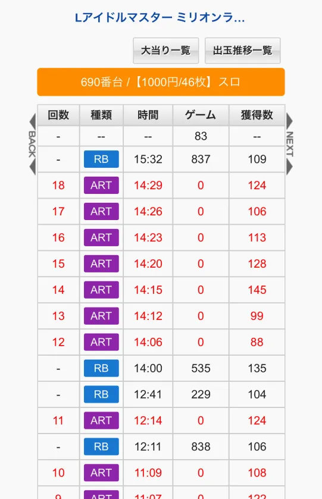
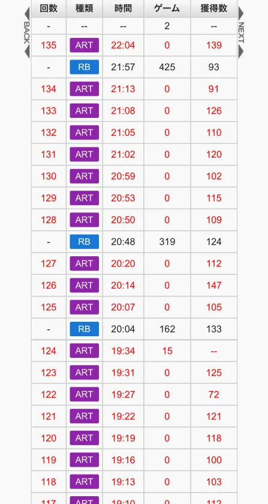
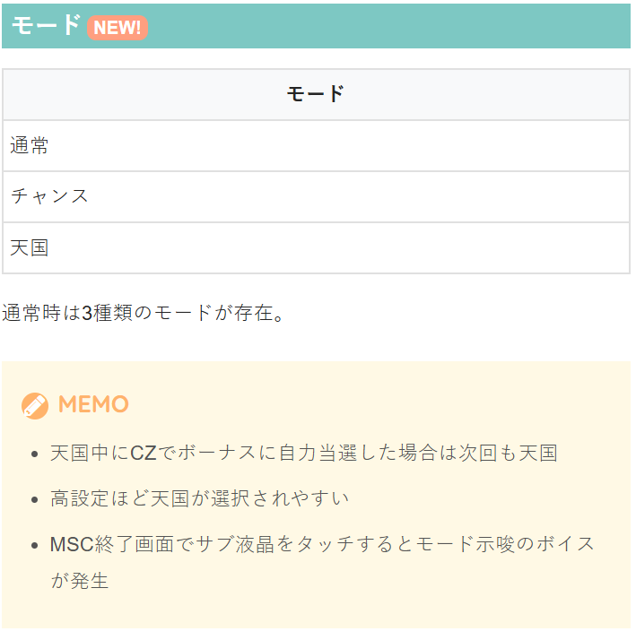
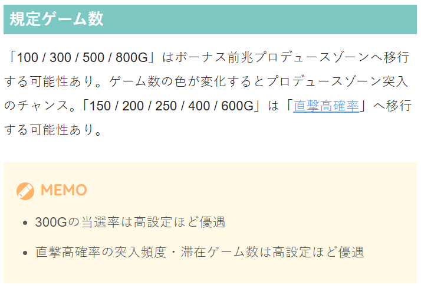
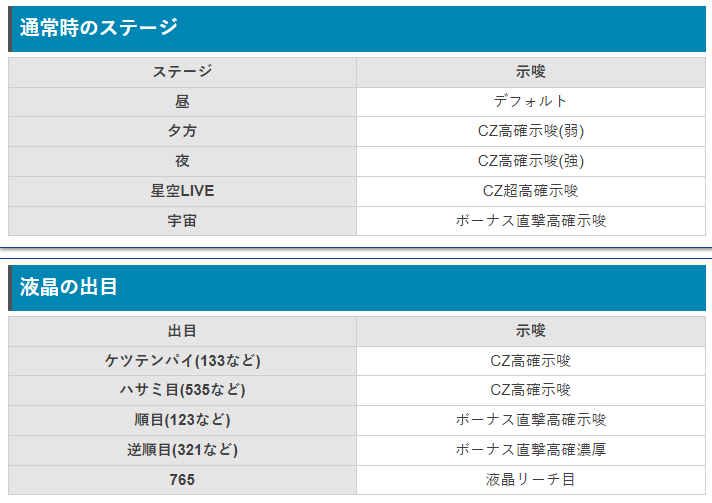

Lアイドルマスター ミリオンライブ! ネクストプロローグ

【天井情報】
800G+α ボーナス当選 リセット時 500G+αに短縮
【リセット判別】
山佐のためガックンあり？
【有利区間について】
エンディング到達時の状態によってツラヌキ後の恩恵が変化！ありがとう!の大量ストック大量保有時等にエンディングに到達した場合はより強い恩恵となる!?
有利区間切断条件
差枚+2100枚くらいでエンディング到達？差枚マイナスでも超ミリオンセブンチャンスに入ったら有利切れてそう。
狙い目
【リセット狙い】
230Gから
100Gゾーン狙い 90Gから（当選分布は130Gくらい）
【ボーナス間天井狙い】
490Gから
ボーナス単発後 230Gから
※単発後は天井短縮？更に単発が続くほどボーダー下げれるかも？
【特殊キューブ狙い】
超ミリオンセブンチャンスを駆け抜けた場合は特殊キューブがそのままとなる。
そのため、超ミリオンセブンチャンス駆け抜け後の履歴はミリオンセブンチャンス当選まで打った方が良さそう。単発後同様に天井短縮もしてそう？
【ゾーン狙い】
100ゾーン（当選分布は130Gくらい）
単発後以外 75Gから
単発後 85Gから
100G未満での当選後 50Gから
2連続で100G未満での当選後 0Gから
※天国中にCZから当選時は次回も天国のため100G以内当選後は天国当選率が高い傾向
300ゾーン 310Gから（当選分布は330Gくらい）
【有利区間関連狙い】
差枚+1800枚以上 ボーナス当選まで？天国（100ゾーン）ゾーンまで？
やめ時
ミリオンセブンチャンス後、サブ液晶タッチで次回モード示唆のボイス発生。
基本1G回してやめ。
超ミリオンセブンチャンス駆け抜け後はミリオンセブンチャンス当選まで推奨
天国中にCZでボーナスに自力当選した場合は次回も天国。そのため天国濃厚時にCZで当選した場合は続行した方が良さそう。（ただしモード示唆等で天国濃厚の状況があるのか不明）
その他
単発履歴について
12:41が単発履歴、14:00が短縮天井で当選したと思われる。

超ミリオンセブンチャンス履歴について
下記のデータ履歴の19:34ARTは、超ミリオンセブンチャンス失敗後と思われる。
差枚+2100-2200枚くらいで2-50GくらいのAT履歴が出てくるので、50G以内で獲得枚数が0枚のATは超ミリオンセブンチャンスの履歴と思われる。
差枚マイナスでもその時点で有利を切ってそう。(差枚-400枚時点で超の履歴があった台で差枚+1800付近で超の履歴が出てた)




参考元
基本情報
- メーカー: 山佐
- 機械割: 97.6% 〜 114.3%
- 導入開始日: 2025年04月21日（月）
- ゲーム性概要: ●超高確率のリアルボーナスと上乗せを実現した「ミリオンシステム」 ●通常時は規定ゲーム数・レア役・CZからボーナスを目指すゲーム性 ●AT中は「ありがとう！」や「強化アイテム」でATを有利に進めることが可能 ●多彩なATの種類と特化ゾーンを搭載


打ち方
打ち方・小役
打ち方（小役狙い）
「最初に狙う絵柄」 左リールにBARを目押し。スイカが上段までスベった時以外、中＆右リールはフリー打ちでOKだ。 ちなみに、レア役はすべてリプレイフラグなので、取りこぼしても枚数的な損はない。

「スイカ上段or中段停止時」 中リールはフリー打ちでOK。ややわかりづらくなるかもしれないが、右リールは赤7が代用になるので狙わなくてもスイカは判別できる。

「小役の停止例」 中リール中段に羽がついているベル（7やBARの上にあるベル）揃いがチャンスベル。 チェリー＋チャンスベルのように、2つの役が複合するデュオ役は強レア役扱い。ミリシタ目がもっとも強い役で、通常時であればCZ当選濃厚になる。

※数値等は独自調査値です
変則押しはNG
通常時、押し順ナビなし時は左リール第1停止での消化を推奨する。

※数値等は独自調査値です
ボーナス中の打ち方
基本は押し順ナビ通りに消化。リール枠が白くフラッシュしたら、いずれかのリールにBARを狙おう。

※数値等は独自調査値です
中押し手順（AT中限定）
「最初に狙う絵柄」 AT中（押し順ナビなし時）は変則押しも可能。 レア役はすべてリプレイフラグなので、左＆右リールはフリー打ちでも問題はないが、成立役が見抜きやすくなるので左リールBAR狙いがオススメだ（右リールは赤7がスイカの代用）。

「BAR上段停止時」 ハズレorリプレイorミリシタ目。リプレイの左下がりテンパイハズレがミリシタ目。


「BAR下段停止時」 チェリーorチャンスベルorデュオ役B・C。


「スイカ中段停止時」 チェリーorスイカorデュオ役Aorミリシタ目。


「ベル中段停止時」 ハズレor3枚ベルorミリシタ目。


※停止形はすべて一例
※数値等は独自調査値です
解析情報通常時
小役関連
レア役確率
| 役 | 確率 |
|---|---|
| チェリー | 1/85.7 |
| スイカ | 1/85.7 |
| チャンスベル | 1/85.7 |
| デュオ役A | 1/655.4 |
| デュオ役B | 1/655.4 |
| デュオ役C | 1/655.4 |
| ミリシタ目 | 1/5461.3 |
| レア役合算 | 1/25.1 |
通常時の小役確率は普遍だが、AT中は弱レア役確率がATの種類や内部状態によって変化する。
※数値等は独自調査値です
CZ当選率（設定1）
| 役 | 通常中 | 高確中 | 超高確中 |
|---|---|---|---|
| チェリー | 3.6% | 9.9% | 50.2% |
| スイカ | 0.4% | 0.4% | 50.2% |
| チャンスベル | 2.4% | 6.7% | 50.2% |
| デュオ役 | 30.4% | 50.2% | 100% |
| ミリシタ目 | 100% | 100% | ボーナス濃厚 |
直撃高確滞在時のボーナス当選率（設定1）
| 役 | 通常中 | 高確中 | 超高確中 |
|---|---|---|---|
| チェリー | 7.0% | 12.5% | 50.0% |
| スイカ | 1.2% | 2.3% | 50.0% |
| チャンスベル | 9.4% | 20.3% | 50.0% |
| デュオ役 | 33.2% | 69.9% | 100% |
| ミリシタ目 | 100% | 100% | 100% |
宇宙ステージ中のボーナス当選率
| 役 | 当選率 |
|---|---|
| 下記以外 | 0.4% |
| チェリー | 33.2% |
| スイカ | 33.2% |
| チャンスベル | 33.2% |
| デュオ役 | 100% |
| ミリシタ目 | 100% |
宇宙ステージでボーナスに当選した場合、SSラッシュ・SPありがとう・ATのすべてを獲得できる。
※数値等は独自調査値です
CZ・ボーナス本前兆中の昇格当選率
| 役 | 当選率 |
|---|---|
| 弱レア役 | 0.4% |
| デュオ役 | 12.5% |
| ミリシタ目 | 100% |
CZの本前兆中はマスターグロウアップチャレンジ（上位CZ）への昇格を、ボーナス本前兆中はSSラッシュを抽選する。 どちらの本前兆中も、各レア役での当選率は共通だ。
※数値等は独自調査値です
リールロック
ロック2段階で弱レア役ならボーナス濃厚。ロック2段階時に発生するSSRカットインがサブ液晶のキャラと一致していると、期待度がアップする（担当カスタムON時を除く）。

リールロックの対応役
| リールロック | 対応役 |
|---|---|
| 1段階目 | レア役 |
| 2段階目 | デュオ役・ミリシタ目 |
| 3段階目 | ロングフリーズ発生 |
リールロックの期待度
| リールロック | CZ以上 | ボーナス |
|---|---|---|
| 1段階目 | 46.5% | 6.0% |
| 2段階目 | 84.6% | 26.1% |
| 3段階目 | 一 | 100% |
※数値等は独自調査値です
内部状態関連
内部状態と直撃高確
滞在ステージで状態を示唆していて、夕方や夜は高確、宇宙ステージは直撃高確滞在のチャンスだ。 ステージだけでなく、液晶出目でも状態が示唆される。
内部状態と直撃高確の概要
| 状態 | 内容 |
|---|---|
| 内部状態 | ● 通常＜高確＜超高確の3種類 ● CZ当選率やボーナス当選率が変化 |
| 直撃高確 | ● 通常＜高確の2種類 ● 高確移行時はCZ抽選がなくなり、ボーナス直撃当選率が優遇 |
各状態の移行契機
| 状態 | 契機 |
|---|---|
| CZ抽選状態 | おもにレア役で昇格、 保証ゲーム数消化後のリプレイ・ベル揃いで転落抽選 |
| 直撃高確 | 規定ゲーム数消化時の一部で昇格 |
内部状態と直撃高確はそれぞれ別軸での抽選となっているので、高確×直撃高確のような複合パターンもある。 超高確（星空LIVEステージなど）滞在中に直撃高確へ移行した場合などは、ボーナス直撃期待度がかなり高い。
内部状態・直撃高確移行率
内部状態は成立役に応じて、直撃高確は規定ゲーム数消化で昇格を抽選。2つの状態は複合するので、規定ゲーム数付近でレア役を引いた場合はボーナス直撃の期待度が高い状態のチャンスとなる。
内部状態昇格率
| 役 | 通常→高確 | 通常→超高確 | 高確→超高確 |
|---|---|---|---|
| リプレイ・ベルなど | 0.4% | ー | ー |
| チェリー・チャンスベル | 12.5% | ー | ー |
| スイカ | 40.2% | 0.4% | 10.2% |
| デュオ役 | 50.0% | ー | ー |
（超）高確移行時は保証ゲーム数を消化後のリプレイやベル揃いで転落が抽選される。
直撃高確移行期待度
| ゲーム数 | 期待度 |
|---|---|
| 150G | △ |
| 200G | ◯ |
| 250G | △ |
| 400G | ◯ |
| 600G | ◎ |
150G、250Gでの直撃高確移行に秘密が!?
※数値等は独自調査値です
宇宙ステージの継続ゲーム数振り分け
| ゲーム数 | 振り分け |
|---|---|
| 30G | 53.5% |
| 50G | 45.3% |
| 80G | 1.2% |
宇宙ステージ移行時は数ゲームの前兆を経由するが、前兆中も宇宙ステージ中の数値でボーナス抽選がおこなわれている。
※数値等は独自調査値です
モード
通常モード
通常時は通常・チャンス・天国の3種類のモードが存在し、規定ゲーム数消化時のボーナス期待度や天井ゲーム数が変化する。
通常モードの特徴
| 項目 | 特徴 |
|---|---|
| モードの種類 | 通常＜チャンス＜天国 |
| 高設定の特徴 | 天国選択率や300G台のボーナス当選率が高い |
| 天国中のCZ | 天国中にCZ経由でボーナスに当選した場合、 次回も天国濃厚（有利区間リセット時除く） |
モードごとの天井ゲーム数
| モード | 天井 |
|---|---|
| 通常 | 800G＋α |
| チャンス | 500G＋α |
| 天国 | 100G＋α |
ミリオンセブンチャンスでボーナスを一度も引けずに駆け抜けた場合は、ボーナス間天井が最大500G＋αに短縮される（天国時はもちろん100G＋αで天井到達）。
※数値等は独自調査値です
設定変更時・モード振り分け
| モード | 振り分け |
|---|---|
| 通常 | ー |
| チャンス | 75.8% |
| 天国 | 24.2% |
設定変更時はチャンスモード以上が選択される。
※数値等は独自調査値です
ゲーム数消化
ゲーム数消化時の抽選内容
| 移行抽選 | ゲーム数 |
|---|---|
| ボーナス前兆 （プロデュースゾーン） | 100G・300G・500G・ 800Gがチャンス |
| ボーナス直撃高確 （夜ステージなど） | 150G・200G・250G・ 400G・600Gがチャンス |
プロデュースゾーン（前兆ステージ）へ移行すればボーナス当選のチャンスだ。
※数値等は独自調査値です
グロウアップチャレンジ（CZ）
CZ概要
チケットを獲得するほどボーナスに当選しやすくなるCZ。前半と後半の2部構成で、前半は小役が成立すればチケット獲得濃厚、液晶上部のアイコン色に応じて枚数獲得期待度などが変化する。

後半では獲得したチケットを使ってボーナスがジャッジされる。
グロウアップチャレンジ性能
| 項目 | 内容 |
|---|---|
| 当選契機 | レア役での抽選 |
| CZ確率 | 1/428.0（設定1） |
| 継続ゲーム数 | 前半10G＋ジャッジ1G |
| 成功期待度 | 約40%（上位CZは約82%） |
| 前半の抽選 | 小役成立役でチケットを獲得、 アイコンの色で複数枚獲得期待度などが変化 |
| 後半の抽選 | 後半はチケットを1枚ずつ使ってボーナスを抽選、 ボーナス当選後は残りチケットでありがとう！を抽選 |
| その他 | 虹のチケット獲得でボーナス濃厚 アイコンが10G目以外すべて赤になる上位CZあり |
CZ確率
| 設定 | 確率 |
|---|---|
| 1 | 1/428.0 |
| 2 | 1/415.5 |
| 3 | 1/378.4 |
| 4 | 1/353.8 |
| 5 | 1/322.7 |
| 6 | 1/306.2 |
「アイコン」 アイコンの色で複数枚数獲得の期待度や紫アイコン時にレア役を引けばボーナス当選（虹チケット獲得）濃厚となる。

「前半：チケット獲得パート」 1Gで複数枚のチケットを獲得する可能性あり。Thank You！ステップアップ演出発生で複数獲得の大チャンスだ。

［Thank You！ステップアップ演出］ ステップは1〜4の4段階で、ステップ4まで到達すればThank You！ LIVE濃厚！

ステップごとの恩恵
| ステップ | 恩恵 |
|---|---|
| ステップ1 | チケット＋1枚（トータル2枚） |
| ステップ2 | チケット＋1枚（トータル3枚） |
| ステップ3 | チケット＋1枚（トータル4枚）＋ボーナス濃厚 |
| ステップ4 | フリーズ濃厚 |
Thank You！ステップアップ演出はチケット獲得時の一部で発生するので、ステップ1の場合はトータル2枚、ステップ2ならトータル3枚のチケットを獲得する。
「後半：ジャッジパート」 チケット1枚ずつ使ってボーナスをジャッジ。レバーONでまとめて結果をみることもできる。ボーナス当選後は残ったチケットで「ありがとう！」の獲得抽選がおこなわれる。

「上位CZ：マスターグロウアップチャレンジ」 アイコンがすべて赤色に変化（10G目を除く）する上位CZで、毎ゲーム必ずチケットを獲得。ボーナス期待度は約82%とアツい！

※数値等は独自調査値です
アイコンテーブル表
テーブルは全部で6種類。 アイコンの序列は白＜青＜緑＜赤の順で、どのテーブルも10G目は紫になる。
※数値等は独自調査値です
フリーズ発生率
チケット獲得時の一部で発生するThank You！ステップアップ演出がステップ4（リールロック3段階目）までいけばフリーズが発生し、Thank You！ LIVEに当選。 チケット4枚獲得時（ステップ3到達時）に、契機役不問でフリーズ抽選がおこなわれる。

ステップ3到達時・フリーズ発生率
| 契機役 | 発生率 |
|---|---|
| 不問 | 12.5% |
※数値等は独自調査値です
チケット1枚ごとのボーナス当選率
| チケット | 当選率 |
|---|---|
| 通常チケット | 約6% |
| 虹チケット | 100% |
ボーナス当選後・残りチケットでのありがとう！当選率
| チケット | 通常ありがとう！ | SPありがとう！ |
|---|---|---|
| 通常チケット | 約12% | 約1% |
| 虹チケット | ー | 100% |
※数値等は独自調査値です
チケット獲得率 白アイコン
| 役 | 1枚 | 2枚 | 3枚 | 4枚 |
|---|---|---|---|---|
| その他 | ー | ー | ー | ー |
| リプレイ・ベル揃い | 97.7% | 1.6% | 0.4% | 0.4% |
| 弱レア役 | ー | 97.7% | 2.0% | 0.4% |
| デュオ役・ミリシタ目 | ー | ー | 75.0% | 25.0% |
青アイコン
| 役 | 1枚 | 2枚 | 3枚 | 4枚 |
|---|---|---|---|---|
| その他 | 9.4% | ー | ー | ー |
| リプレイ・ベル揃い | 75.0% | 23.0% | 1.6% | 0.4% |
| 弱レア役 | ー | 82.4% | 16.4% | 1.2% |
| デュオ役・ミリシタ目 | ー | ー | 50.0% | 50.0% |
緑アイコン
| 役 | 1枚 | 2枚 | 3枚 | 4枚 |
|---|---|---|---|---|
| その他 | 48.8% | 0.4% | 0.4% | 0.4% |
| リプレイ・ベル揃い | 50.0% | 46.1% | 3.1% | 0.8% |
| 弱レア役 | ー | 50.0% | 44.9% | 5.1% |
| デュオ役・ミリシタ目 | ー | ー | ー | 100% |
赤アイコン
| 役 | 1枚 | 2枚 | 3枚 | 4枚 |
|---|---|---|---|---|
| その他 | 98.8% | 0.4% | 0.4% | 0.4% |
| リプレイ・ベル揃い | ー | 93.4% | 6.3% | 0.4% |
| 弱レア役 | ー | ー | 94.9% | 5.1% |
| デュオ役・ミリシタ目 | ー | ー | ー | 100% |
紫アイコン
| 役 | 1枚 | 2枚 | 3枚 | 4枚 |
|---|---|---|---|---|
| その他 | ー | ー | ー | ー |
| リプレイ・ベル揃い | 100% | ー | ー | ー |
| 弱レア役 | 100% | ー | ー | ー |
| デュオ役・ミリシタ目 | 100% | ー | ー | ー |
小役揃い時はチケット獲得濃厚。上位のアイコンほど、ハズレでのチケット獲得率や小役揃い時の複数枚数獲得率が高い。
※数値等は独自調査値です
ジュエル
ジュエル解説
通常時にリール左のジュエルが光ることがある。段階は小＜中＜大の3パターンで、大が出現したら次のボーナス当選時に期待!?

［ジュエル：小］

［ジュエル：中］

［ジュエル：大］

※数値等は独自調査値です
フリーズ
ロングフリーズ動画
リールロック3段階目到達でロングフリーズが発生。Thank You！ LIVE突入濃厚となるプレミアムフラグだ。
解析情報ボーナス時
ボーナス
ボーナスの種類
プリンセス・フェアリー・エンジェルの3種類は揃った絵柄によって名称が変化するだけで、性能自体は共通。この3つのボーナスのタイトルにプラチナの文字が出現すると、AT濃厚のプラチナボーナスになる。 7・BAR・7揃いなら、ユニオンライブ濃厚のユニオンボーナスだ。

ボーナスの種類
| ボーナス | 中リールの絵柄 | 内容 |
|---|---|---|
| プリンセスボーナス | 赤7 | デフォルト |
| フェアリーボーナス | 青7 | デフォルト |
| エンジェルボーナス | 黄7 | デフォルト |
| プラチナボーナス | 赤or青or黄7 | AT濃厚 （上記3ボーナスの一部で発生） |
| ユニオンボーナス | BAR | ユニオンライブ濃厚 |
［プリンセスボーナス］

［フェアリーボーナス］

［エンジェルボーナス］

［プラチナボーナス］

［ユニオンボーナス］

※数値等は独自調査値です
ボーナス概要
ボーナスはすべてリアルボーナスで、消化中にBARが揃えばAT突入。 ボーナス終了後（AT当選時はAT終了後）に移行するミリオンセブンチャンスでボーナスを連チャンさせて出玉を増やすゲーム性だ。 プラチナボーナスは当選した時点でAT濃厚、ユニオンボーナスは上乗せ性能がアップしたAT・ユニオンライブへ突入する。
ボーナス性能
| 項目 | 内容 |
|---|---|
| 当選契機 | CZ成功、規定ゲーム数消化、直撃抽選 |
| 獲得枚数 | 平均116枚 |
| 消化中の抽選 | BARが揃えばAT、2回以上揃えば上位AT、 ハズレ時にありがとう！ストック獲得の可能性あり |
| ボーナス消化後 | AT権利獲得時はATへ、 非獲得時はミリオンセブンチャンスへ |
「告知タイプと楽曲選択」 ボーナス開始時に告知パターンと楽曲を任意で変更できる（サブ液晶タッチで変更）。 チャンス告知は狙えカットイン→BAR揃いでAT濃厚。完全告知は金シャッターが閉まればAT濃厚だ。

BAR揃い回数ごとの恩恵
| 回数 | 恩恵 |
|---|---|
| 1回 | ミリオンライブ（AT） |
| 2回 | ATがU.O.へ昇格 |
| 3回 | U.O.＋リバーン |
| 4回以降 | SPありがとう！（ボーナス濃厚）をストック |
同一ボーナス中にBARが揃うほど恩恵がパワーアップ。2回目・3回目のBAR揃いでATが上位ATへ昇格、4回目以降はボーナス濃厚のSPありがとう！を獲得できる。 プラチナボーナスやユニオンボーナスはAT濃厚なので、1回目のBAR揃いから上位ATに当選する。
［チャンス告知：狙えカットイン］ カットインの色は青＜緑＜赤＜虹の順にチャンス。

［完全告知：金シャッター］

「白フラッシュ時はBAR狙い」 リール枠が白くフラッシュした場合は、左リールにBARを狙って消化（いずれかのリールにBARを狙えばOK）。 ハズレ時はリール下のマスが1マスずつ埋まっていき、5の倍数（宝箱に到達）ごとにありがとう！を獲得できる可能性がある。20個目のマス到達でありがとう！獲得濃厚だ。

［マスと宝箱］

※数値等は独自調査値です
SSラッシュ
ボーナス開始時の一部で突入する、ありがとう！獲得の特化ゾーン。5 or 10G間、毎ゲーム高確率でありがとう！を獲得できる。上乗せ期待度の高いSSラッシュ＋も存在する。

SSラッシュ（＋）性能
| 項目 | 内容 |
|---|---|
| 契機 | ボーナス開始時の一部、通常時の液晶7揃い時 |
| 継続ゲーム数 | 5or10G |
| 消化中の抽選 | ありがとう！を高確率でストック、 ベルナビ発生時はストック2個以上濃厚 |
| 平均ストック | SSラッシュ：8個 SSラッシュ＋：17個 |
| BAR揃い確率 | 約1/9 |
「上乗せ演出」 上乗せ時の演出は3分割＜連打＜ねじねじの順に大量獲得に期待できる。

「SSラッシュ＋」

※数値等は独自調査値です
ボーナス中のBAR揃い確率
| 状態 | 確率 |
|---|---|
| 通常 | 1/194.7 |
| 狙え高確率 | 1/54.3 |
ミリオンセブンチャンスを3回突破するごとに、狙え高確率へ移行。狙え高確率中は液晶左右に帯が出現する。
［狙え高確率］

※数値等は独自調査値です
ミリオンセブンチャンス
ミリオンセブンチャンス概要
AT中などに獲得した「ありがとう！」の分だけ継続するボーナス超高確率ゾーン。液晶右側にあるキューブが1Gごとに移動していき、ボーナスを引いたキューブに対応した恩恵を獲得できる。 キューブは色キューブと特殊キューブの2系統があり、色キューブは色によって恩恵の期待度が変化。特殊キューブは上位ATやボーナスストックなど複数ある。 AT中に獲得した強化アイテムはミリオンセブンチャンスで使用される。

ミリオンセブンチャンス性能
| 項目 | 内容 |
|---|---|
| 当選契機 | ボーナス終了後、AT当選時はAT終了後 |
| 継続ゲーム数 | ありがとう！の所持数分継続 |
| 初期ありがとう！ | 5個＋α |
| 消化中の抽選 | 毎ゲームボーナスを抽選 |
| ボーナス確率 | 約1/5 |
| その他 | ボーナス当選時のキューブによって恩恵が変化 SPありがとう！（虹）はボーナス濃厚 |
特殊キューブの恩恵
| 特殊キューブ | 恩恵 |
|---|---|
| SPありがとう！ | SPありがとう！を獲得（次回ボーナス濃厚） |
| U.O. | U.O.に当選 |
| リバーン | リバーンに当選 |
| SSラッシュ | SSラッシュに当選 |
| Thank You！ LIVE | Thank You！ LIVEに当選 |
強化アイテム
| アイテム | 効果 |
|---|---|
| ホールド | ありがとう！の減算停止＆ 液晶中央のキューブを固定 |
| リプレイ・レア役強化 | リプレイorレア役成立でボーナス濃厚 |
| キューブ強化 | 液晶中央に来るキューブを強化 |
「キューブ」 液晶右側のキューブが、1Gごとに左へスライド。ボーナス当選時に中央に来ていたキューブによって恩恵が変化する。特殊キューブが右側にある状態でミリオンセブンチャンスが終了してしまった場合、次の初当りまで特殊キューブが持ち越される。

「ボーナス抽選」 狙えは青＜緑＜赤＜虹の順にチャンス。右リールに3連7が止まればボーナス濃厚となる。

「アイテム」 アイテムの継続ゲーム数は、サブ液晶に表示される。

「終了画面」 レア役を引けば復活のチャンス。サブ液晶をタッチした時のボイスで次回のモードが示唆される。

※数値等は独自調査値です
超ミリオンセブンチャンス
エンディングボーナス後に突入するミリオンセブンチャンスの上位版で、出現するキューブがすべて特殊キューブになる。

超ミリオンセブンチャンス性能
| 項目 | 恩恵 |
|---|---|
| 突入契機 | エンディングボーナス後 |
| 継続ゲーム数 | ありがとう！の分だけ継続 （初期ありがとう！は7個） |
| ボーナス確率 | 約1/5 |
| その他 | 出現するキューブがすべて特殊キューブ |
| 期待枚数 | 約2400枚 |
超ミリオンチャンスの初期キューブ振り分け
| キューブ | 振り分け |
|---|---|
| SSラッシュ | 16.4% |
| U.O. | 24.2% |
| リバーン | 24.2% |
| Thank You！ LIVE | 12.5% |
| SPありがとう！ | 22.7% |
※数値等は独自調査値です
キューブ系の特殊抽選
| 状態 | 抽選 |
|---|---|
| 残りキューブが すべて白でボーナス当選 | ● すべてのキューブの種類を再抽選 ● 抽選の結果、再びすべて白になる可能性はある |
| 特殊キューブが 残った状態で終了 | ● 次回ミリオンセブンチャンスに特殊キューブを持ち越し |
| 天井 | ● 20個目のキューブで天井となりボーナス濃厚 |
| キューブ 強化アイテム | ● 当該キューブが紫or特殊キューブの場合、アイテムやありがとう！は消費されない ● まれにThank You！ LIVEへ昇格 |
ミリオンセブンチャンスを成功時は基本的にキューブの並びは引き継がれるが、すべて白の状態で成功すれば再抽選がおこなわれる。 特殊キューブを残して終了してしまった場合、残った特殊キューブは次回のミリオンセブンチャンスへ引き継がれるので、複数個残っていたり、Thank You！ LIVEなどの強い恩恵のキューブが残っている場合は打ち続けるのもありだ。
※数値等は独自調査値です
終了画面の抽選

終了画面での抽選内容
| 役 | 抽選 |
|---|---|
| リプレイ | 復活抽選あり |
| 弱レア役 | 復活のチャンス |
| デュオ役・ミリシタ目 | 復活濃厚 |
| 内部的にユニオンボーナス成立 | 復活濃厚 |
終了画面でリプレイ・レア役を引けば復活のチャンス。見た目では判別できないが、内部的にユニオンボーナスが成立（ミリオンセブンチャンスを成功させていればユニオンボーナスが出てきた）していた場合は復活濃厚となる。 復活時はありがとう！を5個獲得する。
※数値等は独自調査値です
色キューブでボーナス当選時の特殊恩恵獲得期待度
| 色 | 期待度 |
|---|---|
| 赤 | 50%以上 |
| 紫 | 80%以上 |
※特殊恩恵…SPありがとう！、U.O.、リバーン、SSラッシュ、Thank You！ LIVE
特殊キューブでボーナスを獲得しなくとも、上位ATなどの特殊キューブの恩恵を獲得できる可能性がある。 特殊キューブ非獲得時は、キューブの色に応じてありがとう！の獲得が抽選される。
キューブの色別・成功時のありがとう！振り分け
| 個数 | 白 | 黄 | 緑 | 赤 | 紫 |
|---|---|---|---|---|---|
| 0個 | 99.6% | 一 | 一 | 一 | 一 |
| 1個 | 一 | 97.7% | 87.5% | 50.0% | 一 |
| 2個 | 一 | 1.6% | 10.2% | 47.3% | 94.1% |
| 3個 | 一 | 0.4% | 1.6% | 1.6% | 3.1% |
| 5個 | 一 | 0.4% | 0.4% | 0.8% | 1.6% |
| 7個 | 一 | 一 | 0.4% | 0.4% | 0.8% |
| 10個 | 0.4% | 一 | 一 | 一 | 0.4% |
白キューブは基本的にハズレだが、当選時は10個のありがとう！を獲得できる。
※数値等は独自調査値です
ミリオンライブ（AT）
ミリオンライブ概要
おもにボーナス中のBAR揃いを契機に突入するATで、消化中はありがとう！やミリオンセブンチャンスの強化アイテム獲得抽選がおこなわれる。 ライブはプリンセス・フェアリー・エンジェルの3種類が基本で、ライブによって対応役が変化（3つのライブは対応役確率が同じなのでAT性能も一緒）。ユニオンライブは全レア役が対応役となる。

U.O.・リバーン・Thank You！ LIVEといった上位ATも存在する。
ミリオンライブ（AT）性能
| 項目 | 内容 |
|---|---|
| 当選契機 | ボーナス中のBAR揃い、プラチナボーナス後 （ユニオンボーナス後はユニオンライブへ） |
| 継続ゲーム数 | 30G |
| 1Gあたりの純増 | 約0.4枚 |
| 消化中の抽選 | 成立役に応じてありがとう！や、 ミリオンセブンチャンスの強化アイテム獲得を抽選 |
| その他 | ライブの種類に応じて対応レア役が変化、 レア役高確移行で対応レア役が高確率で出現 |
ライブごとの対応レア役
| ライブ | 対応レア役 |
|---|---|
| プリンセスライブ | チェリー |
| フェアリーライブ | スイカ |
| エンジェルライブ | チャンスベル |
| ユニオンライブ | チェリー・スイカ・チャンスベル （ありがとう！平均獲得数は7個） |
対応レア役成立でありがとう！獲得濃厚。もちろん、対応役以外でもレア役はありがとう！獲得のチャンスとなる。
［プリンセスライブ］

［フェアリーライブ］

［エンジェルライブ］

［ユニオンライブ］ プリンセスボーナス経由はプリンセスライブ、ユニオンボーナス経由はユニオンライブというように、ボーナスに対応したATへ突入する。

「レア役確率アップ状態」 リール左右のインターフェイスが光ると、当該ATの対応レア役確率アップ状態へ移行。レア役確率アップ状態はATが終了するまで継続する。

次のボーナス（ミリオンセブンチャンス成功時に揃えるボーナス）はAT中には内部的に成立していて、 ライブの種類と同じボーナスもしくは、ユニオンボーナスが成立するとレア役確率アップ状態へ移行 する。 例えば、プリンセスライブ消化中にレア役確率アップ状態へ移行した場合、次に出てくるボーナスはプリンセスボーナスかユニオンボーナスということになる。
「ありがとう！獲得」 1契機で複数個獲得する可能性もある。

「ミリオンセブンチャンス強化アイテム獲得」 レア役はありがとう！と強化アイテムのダブル当選にも期待できる。

※数値等は独自調査値です
AT中のレア役確率
レア役高確中はライブに対応したレア役（プリンセスライブならチェリーなど）の出現確率が大幅にアップするので、ありがとう！や強化アイテム獲得の大チャンスとなる。 ユニオンライブはチェリー・スイカ・チャンスベルのすべてが高確率になるのでアツイ。
［非高確中］レア役確率
| 役 | 確率 |
|---|---|
| チェリー | 1/84.9 |
| スイカ | 1/84.9 |
| チャンスベル | 1/84.9 |
| デュオ役A | 1/655.4 |
| デュオ役B | 1/655.4 |
| デュオ役C | 1/655.4 |
| ミリシタ目 | 1/5461.3 |
弱レア役確率は通常時よりも若干アップ、強レア役確率は一緒だ。
［レア役高確中］レア役確率
| 役 | プリンセス | フェアリー | エンジェル |
|---|---|---|---|
| チェリー | 1/9.7 | 1/85.7 | 1/85.7 |
| スイカ | 1/85.7 | 1/9.7 | 1/85.7 |
| チャンスベル | 1/85.7 | 1/85.7 | 1/9.7 |
| デュオ役A | 1/655.4 | ||
| デュオ役B | 1/655.4 | ||
| デュオ役C | 1/655.4 | ||
| ミリシタ目 | 1/5461.3 |
レア役高確中は対応レア役の確率のみがアップする。
［ユニオンライブ］レア役確率
| 役 | 確率 |
|---|---|
| チェリー | 1/23.0 |
| スイカ | 1/23.0 |
| チャンスベル | 1/23.0 |
| デュオ役A | 1/655.4 |
| デュオ役B | 1/655.4 |
| デュオ役C | 1/655.4 |
| ミリシタ目 | 1/5461.3 |
| レア役合算 | 1/7.4 |
ユニオンライブには高確の概念がなく、つねに弱レア役確率が高くなっている。
レア役確率合算
| 状態 | 確率 |
|---|---|
| レア役高確以外 | 1/24.9 |
| レア役高確中 | 1/7.6 |
| ユニオンライブ | 1/7.4 |
※数値等は独自調査値です
ありがとう！上乗せ当選率
| 役 | プリンセス ライブ | フェアリー ライブ | エンジェル ライブ | ユニオン ライブ |
|---|---|---|---|---|
| チェリー | 100% | 33.2% | 33.2% | 100% |
| スイカ | 33.2% | 100% | 33.2% | 100% |
| チャンスベル | 33.2% | 33.2% | 100% | 100% |
| デュオ役 | 100% | 100% | 100% | 100% |
| ミリシタ目 | 100% | 100% | 100% | 100% |
ユニオンライブ中のレア役は、ありがとう！上乗せだけでなく、アイテム獲得も濃厚だ。
※数値等は独自調査値です
3連7を狙え
非レア役高確中、非対応役成立の次ゲームの一部で、3連7を狙えが発生する可能性あり。狙え成功でボーナス＋ATストック濃厚となる。

ライブ別・ありがとう！獲得時のアイテム当選率 非レア役高確時
| 役 | プリンセス | フェアリー | エンジェル | ユニオン |
|---|---|---|---|---|
| チェリー | 33.2% | 1.2% | 1.2% | 100% |
| スイカ | 2.0% | 50.0% | 2.0% | 100% |
| チャンスベル | 2.7% | 2.7% | 51.6% | 100% |
| デュオ役 | 100% | 100% | 100% | 100% |
| ミリシタ目 | 100% | 100% | 100% | 100% |
レア役高確時
| 役 | プリンセス | フェアリー | エンジェル | ユニオン |
|---|---|---|---|---|
| チェリー | 33.2% | 9.4% | 9.4% | 100% |
| スイカ | 10.2% | 50.0% | 10.2% | 100% |
| チャンスベル | 10.9% | 10.9% | 51.6% | 100% |
| デュオ役 | 100% | 100% | 100% | 100% |
| ミリシタ目 | 100% | 100% | 100% | 100% |
レア役高確時はアイテムを獲得しやすい。
上位AT
U.O.概要
ありがとう！獲得時の一部で0G連上乗せが発生する「ありがとう！上乗せに特化」した上位AT。0G連の継続率は複数パターンが存在する。

対応役も存在するので、例えばプリンセスライブでU.O.に突入した場合はチェリーが大チャンスとなる。
ちなみに、強化アイテム抽選もおこなわれているが、ありがとう！とダブル当選した場合でも、0G連で加算されるのはありがとう！のみで、強化アイテムは加算されない。
U.O.性能
| 項目 | 内容 |
|---|---|
| 当選契機 | ボーナス中の2回目のBAR揃い、 ミリオンセブンチャンスの恩恵の一部 |
| 継続ゲーム数 | 30G |
| 1Gあたりの純増 | 約0.4枚 |
| 消化中の抽選 | ありがとう！獲得時の一部で0G連上乗せが発生 （0G連の継続率は複数あり） |
U.O.中の抽選内容
| 項目 | 抽選値 |
|---|---|
| 押し順5枚ベルでの上乗せ当選率 | 12.5% |
| ありがとアルティメット発生率 | 上乗せ時の約33% |
| ありがとアルティメットの継続率 | 60%or70％or80％or90％ |
「ありがとアルティメット（0G連）」 ありがとう！獲得後、リール演出が成功すれば0G連スタート！


※数値等は独自調査値です
リバーン概要
ラストで発生するジャッジ演出に成功すればボーナス当選かつ、ボーナス終了後は必ずリバーンに再突入するループ型の上位AT。 こちらもU.Oと同様に、ライブに対応したレア役が対応役になる。

リバーン性能
| 項目 | 内容 |
|---|---|
| 当選契機 | ボーナス中の3回目のBAR揃い、 ミリオンセブンチャンスの恩恵の一部 |
| 継続ゲーム数 | 30G |
| 1Gあたりの純増 | 約0.4枚 |
| 消化中の抽選 | ありがとう！獲得時に上乗せループ抽選あり、 ラストのジャッジ演出成功でボーナスに当選、 ボーナス終了後はリバーンへ再突入 |
| リバーンのループ率 | 31%、50%、66%、80% |
| 上乗せループ発生率 | ありがとう！獲得時の約50% |
| 上乗せループ率 | 33%、50%、70%、80% |
ありがとう！獲得時の上乗せループ抽選当選時は、ループに漏れるまで毎ゲーム上乗せが継続する。
「リバーンチャレンジ（ジャッジ演出）」

※数値等は独自調査値です
Thank You！ LIVE概要
本機最強の上乗せ特化ゾーンで、平均23個のありがとう！を獲得可能だ。

Thank You！ LIVE性能
| 項目 | 内容 |
|---|---|
| 当選契機 | CZ中のThank You！ステップアップ演出4段階、 ロングフリーズ、 ミリオンセブンチャンスの恩恵の一部など |
| 継続ゲーム数 | 30G |
| 1Gあたりの純増 | 約0.4枚 |
| 消化中の抽選 | 毎ゲーム、超高確率でありがとう！を上乗せ |
| 平均ストック | 23個 |
※数値等は独自調査値です
上位ATの複合
ボーナス中に3回BARを揃えるとU.O.とリバーンが複合…のように、上位ATが複合することもある。筐体右側のランプで滞在しているライブを確認可能だ。

※数値等は独自調査値です
上位AT中のありがとう！期待上乗せ個数
| 上位AT | 個数 |
|---|---|
| U.O. | 5.7個 |
| U.O.（レア役確率アップ中） | 11.4個 |
| U.O.＋リバーン | 7.7個 |
| U.O.＋リバーン（レア役確率アップ中） | 15.2個 |
| ユニオンライブ＋U.O. | 15.3個 |
| ユニオンライブ＋U.O.＋リバーン | 20.3個 |
※リバーンを含んだ上位ATは、リバーンのループを加味しない1セットの期待個数
※数値等は独自調査値です
ツラヌキ・有利区間
ツラヌキ条件と恩恵
| 項目 | 内容 |
|---|---|
| 条件 | エンディングボーナス後 |
| 恩恵 | 超ミリオンセブンチャンスへ突入 超ミリオンセブンチャンスはコチラ |
| その他 | エンディングボーナス中の一部で 超ありがとアルティメットに突入 |
エンディングボーナス後は、出現するキューブがすべて特殊キューブになる超ミリオンセブンチャンスに突入。 ありがとう！を大量に持っている、リバーン中にエンディングボーナスを迎えたなど、特殊な状況下でのエンディングボーナス中の一部で、超ありがとアルティメットに突入する可能性がある。
エンディングボーナス中の 超ありがとアルティメット突入条件
| No. | 内容 |
|---|---|
| 1 | ありがとう！を31個以上所持 |
| 2 | SPありがとう！を所持 |
| 3 | SSラッシュに当選 |
| 4 | ライブ（AT）に当選 |
上記条件のいずれかを満たした場合は、超ありがとアルティメット突入に期待できる。
「エンディングボーナス」

「超ありがとアルティメット」 条件を満たしてエンディングボーナス中に発生する可能性あり。SPありがとう！（ボーナス濃厚のありがとう！）を平均3.3個ストックできる。

※数値等は独自調査値です
演出情報
通常時
ステージ解説
| ステージ | 示唆 |
|---|---|
| 昼 | デフォルト |
| 夕方 | CZ高確示唆［弱］ |
| 夜 | CZ高確示唆［強］ |
| 星空LIVE | CZ超高確示唆 |
| 宇宙 | ボーナス直撃高確示唆 |
［昼］

［夕方］

［夜］

［星空LIVE］

［宇宙］

※数値等は独自調査値です
液晶出目の示唆
通常時の液晶図柄の変動パターンや停止出目には、内部状態示唆などの示唆要素が存在する。

図柄変動パターン別の示唆
| パターン | 示唆 |
|---|---|
| 左→中→右の 順に変動 | ● 対応役：リプレイ・レア役 ● ハズレ・ベルの場合は前兆中濃厚 ● 本前兆中ほどハズレ・ベルが成立しやすい ● 連続で発生すると本前兆期待度アップ［小］ |
| 右→中→左の 順に変動 | ● 対応役：ベル・レア役 ● ハズレ・リプレイの場合は前兆中濃厚 ● 本前兆中ほどハズレ・リプレイが成立しやすい ● 連続で発生すると本前兆期待度アップ［中］ |
| 中→左→右の 順に変動 | ● 対応役：全役 ● 発生した時点で高確以上濃厚 |
| 中→右→左の 順に変動 | ● 対応役：全役 ● 発生した時点でCZorボーナス本前兆濃厚 |
| 変動開始遅れ | ● 対応役：チェリー ● チェリー否定でCZ以上のチャンス |
| バウンドストップ | ● 対応役：デュオ役・ミリシタ目 ● 対応役否定でCZorボーナス本前兆濃厚 |
液晶出目の示唆
| 出目 | 示唆 |
|---|---|
| 奇数のみ（135など） | ー |
| ケツテンパイ（133など） | CZ高確示唆 |
| ハサミ目（535など） | CZ高確示唆 |
| 順目（123など） | ボーナス直撃高確示唆 |
| 逆順目（321など） | ボーナス直撃高確濃厚 |
| 765 | 液晶リーチ目 |
7停止時の示唆・期待度
| 7の停止位置 | 示唆・期待度 |
|---|---|
| 左に停止 | 宇宙ステージ滞在を示唆 |
| 中に停止 | ボーナス期待度60.2% |
| 右に停止 | ボーナス期待度69.3% |
| 7のハサミ目 | ボーナス本前兆濃厚 |
| 7がテンパイ | 7揃い（ボーナス）濃厚 |
| 7揃い | SSラッシュ濃厚 |
ユニット目 プリンセスステージ
| 出目 | ユニット名 | キャラ |
|---|---|---|
| 2・1・12 | STAR ELEMENTS | 琴葉・未来・可奈 |
| 5・10・8 | トゥインクルリズム | 百合子・育・亜利沙 |
| 11・7・4 | Charlotte・Charlotte | エミリー・７・まつり |
フェアリーステージ
| 出目 | ユニット名 | キャラ |
|---|---|---|
| 2・6・9 | サジタリアス | 恵美・歩・瑞希 |
| 14・9・5 | Escape | 紬・瑞希・志保 |
| 1・7・13 | D/Zeal | 静香・７・ジュリア |
エンジェルステージ
| 出目 | ユニット名 | キャラ |
|---|---|---|
| 4・12・1 | りるきゃん ~3 little candy~ | 茜・可憐・翼 |
| 9・4・3 | アリエス | 環・茜・星梨花 |
| 11・7・2 | Cleasky | 美也・７・エレナ |
ナムコオールスターステージ
| 出目 | ユニット名 | キャラ |
|---|---|---|
| 1・5・14 | ダイヤモンドダイバー◇ | 春香・やよい・響 |
| 9・11・2 | ARCANA | 貴音・あずさ・千早 |
| 13・10・12 | ARMoo | 真美・律子・亜美 |
ステージごとの特定のユニットが停止すれば、ボーナス本前兆濃厚だ。
ジュエルポイント示唆
| 出目 | 示唆 |
|---|---|
| 9・6・1（黒井プロ） | ジュエルポイント80pt以上 |
※数値等は独自調査値です
内部状態示唆演出
| 演出 | 示唆 | |
|---|---|---|
| プレゼントSU演出：花束出現 | 高確濃厚 | |
| 液晶図柄：ハサミ目 | 高確濃厚 | |
| ステージチェンジ：緑のアイキャッチ | 夜移行で高確濃厚、 星空ライブなら超高確濃厚 | |
| リールビジョン 演出 | シンボル［大］ | 超高確濃厚 |
| リールビジョン 演出 | パピヨン［大］ | 直撃高確濃厚 |
［プレゼントSU演出：花束］

［緑のアイキャッチ］ 夜ステージへ移行で高確濃厚、星空LIVEステージへの移行なら超高確濃厚だ。

［リールビジョン演出］

※数値等は独自調査値です
前兆
プロデュースゾーン
規定ゲーム数消化で突入する前兆ステージで、アイドルが出現し枠色が昇格するほどボーナス期待度がアップ。ラストの連続演出成功でボーナス濃厚だ。

［アイドル出現］

［連続演出］

※数値等は独自調査値です
グロウアップチャレンジ（CZ）
終了時のサブ液晶タッチボイス
CZ終了時にサブ液晶をタッチすると発生するボイスの種類で、次回CZのアイコンテーブルを示唆する。
ボイスごとの示唆
| ボイス | 示唆 |
|---|---|
| 私にも、何かお手伝いできること、 あるといいな……。 | 調査中 |
| 青羽美咲、一生懸命がんばります♪ | 調査中 |
| 私も事務員として、 成長してるってことだよね？ えへへ。 | 調査中 |
| 音無先輩！ プロデューサーさんみませんでしたか？ | 調査中 |
| それじゃ、プロデューサーさん、 いってらっしゃーい！ | 調査中 |
※数値等は独自調査値です
演出法則
| パターン | 示唆 |
|---|---|
| フラッシュバック | ● 強パターンはステップアップ発生のチャンス ● 961ランプ点灯でフリーズ濃厚 |
| セリフ | ● ハズレ以外ならステップアップ発生に期待 |
| 美咲ナビ | ● 赤看板はレア役成立に期待 ● 赤看板でハズレor3枚ベルならステップアップ発生のチャンスかつステップ3以上のチャンス |
| 流れ星ナビ | ● チケット獲得濃厚 ● 右を取ればステップアップ発生濃厚 ● 右のパピヨンを取ればステップ3以上のチャンス ● Wチケットはボーナス以上濃厚 ● Wチケットで右側を取ればフリーズ濃厚 |
| SSRカットイン | ● レア役＋ステップアップ発生濃厚 ● ハズレだった場合はフリーズ濃厚 |
アイコン色ごとの特徴
| アイコンの色 | 特徴 |
|---|---|
| 白 | ● 基本的に演出は発生しない ● 演出発生時はチケット獲得の大チャンス |
| 青 | ● 演出発生時のチケット獲得期待度は約33% |
| 緑 | ● 基本的に演出は発生 ● チケット獲得のチャンス |
| 赤 | ● チケット獲得濃厚 ● ステップアップ発生に期待 ● チケットを3枚獲得した場合はボーナス濃厚 |
| 紫 | ● 基本的に演出は発生 ● レア役を引けばボーナス濃厚 |
［美咲ナビ：赤看板］

［流れ星ナビ］

［SSRカットイン］

ボーナス
チャンス告知の狙えカットイン期待度
カットインの色は緑でチャンス、赤なら激アツだ。

狙えカットイン期待度
| 色 | 期待度 |
|---|---|
| 青 | やや期待 |
| 緑 | 25.0% |
| 赤 | 90.0% |
| 虹 | 100% |
演出ごとのありがとう！獲得数
| 演出 | 獲得数 |
|---|---|
| 3分割 | 1個以上 |
| 連打 | 3個以上 |
| ねじねじ | 5個以上 |
下パネル消灯時は継続の大チャンスだ。
［3分割］

［連打］

［ねじねじ］

ミリオンセブンチャンス
狙えカットイン期待度

狙えカットイン色ごとのボーナス期待度
| 色 | 期待度 |
|---|---|
| 青 | 15.0% |
| 緑 | 50.0% |
| 赤 | 90.0% |
| 虹 | 100% |
※数値等は独自調査値です
終了時のサブ液晶タッチボイス
ミリオンセブンチャンス終了画面でサブ液晶をタッチすると、ボイスでモードを示唆する。 ボイスは美咲・小鳥の事務員パターンがデフォルト、アイドルのボイスの場合は高モードに期待できる（事務員は美咲＜小鳥の順に高モードのチャンス）。

サブ液晶タッチボイスの示唆
| キャラ | ボイス | 示唆 |
|---|---|---|
| 美咲 | 次も頑張りましょう！ | デフォルト |
| 美咲 | ファイトですよ。 | チャンス示唆［弱］ |
| 美咲 | なにか感じます | チャンス示唆［中］ |
| 美咲 | もう少しだと思うんだけどなぁ… | チャンス示唆［強］ |
| 美咲 | これは…社長さんに報告です！ | チャンスor天国濃厚 |
| 美咲 | 大丈夫ですよ！ プロデューサーさん！ | チャンスor天国濃厚かつ 天国の期待大 |
| 小鳥 | 次の機会がありますよ！ | デフォルト |
| 小鳥 | ファイトですよ。 | チャンス示唆［弱］ |
| 小鳥 | は!?何かを感じるわ… | チャンス示唆［中］ |
| 小鳥 | もう少しで…そんな気がしてるわ | チャンス示唆［強］ |
| 小鳥 | プロデューサーさんと 社長が…まさか！ | チャンスor天国濃厚 |
| 小鳥 | 安心して下さい、 プロデューサーさん！ | チャンスor天国濃厚かつ 天国の期待大 |
| アイドル | 調査中 | 調査中 |
※数値等は独自調査値です
違和感発生時の恩恵
| 違和感 | 恩恵 |
|---|---|
| 下パネル点滅 | ボーナス濃厚 |
| 下パネル消灯 | ボーナス＋恩恵獲得のチャンス |
| 筐体振動 | ボーナス濃厚 |
| パピヨンランプ点灯_赤 | ボーナス濃厚 |
| パピヨンランプ点灯_虹 | ボーナス＋恩恵獲得の大チャンス |
| WINランプ点滅 | ボーナス濃厚 |
| ATランプ点滅 | ボーナス＋恩恵獲得の大チャンス |
| SSラッシュランプ点滅 | ボーナス＋恩恵獲得の大チャンス |
| U.O.ランプ点滅 | ボーナス＋恩恵獲得の大チャンス |
| リバーンランプ点滅 | ボーナス＋恩恵獲得の大チャンス |
| Thank You！ LIVEランプ点滅 | ボーナス＋恩恵獲得の大チャンス |
| 961ランプ点滅 | ボーナス濃厚 |
| 961ランプ点灯 | ボーナス＋恩恵獲得のチャンス |
| 押し順ナビ | ボーナス濃厚 |
| ボーナス中ナビ | ボーナス＋恩恵獲得のチャンス |
| 紫ナビ | ボーナス＋恩恵獲得の大チャンス |
| ！ナビ | ボーナス濃厚 |
| !!!ナビ | ボーナス＋恩恵獲得のチャンス |
| なんとナビ | ボーナス＋恩恵獲得の大チャンス |
| BGM停止 | ボーナス＋恩恵獲得のチャンス |
| BGM変化・Flyers!!! | ボーナス濃厚 |
| BGM変化・Glow Map | ボーナス＋恩恵獲得のチャンス |
| BGM変化・HARMONY 04 | ボーナス＋恩恵獲得の大チャンス |
| BGM変化・Thank You! | ボーナス＋Thank You！ LIVE濃厚 |
ミリオンセブンチャンス中の違和感演出はボーナス濃厚。違和感の種類によっては、上位の恩恵（ありがとう！以外or特殊キューブ獲得）にも期待できる。
ミリオンライブ（AT）
5枚ベル入賞時の文字
5枚ベル入賞時はGETと表示されるのがデフォルト。GET以外であれば前兆（上乗せやアイテム獲得）に期待できる。

5枚ベル入賞時の文字ごとの示唆
| 文字 | 示唆 |
|---|---|
| GET | デフォルト |
| GOOD | 恩恵期待度［弱］ |
| GREAT | 恩恵期待度［中］ |
| PERFECT | 恩恵期待度［強］ |
※数値等は独自調査値です
上位AT
5枚ベル入賞時の文字ごとの示唆
| 文字 | 示唆 |
|---|---|
| 出現しない | 継続の大チャンス |
| GET | デフォルト |
| GOOD | 継続の大チャンスかつループ率50%以上!? |
| GREAT | 継続の大チャンスかつループ率66%以上!? |
| PERFECT | 継続の大チャンスかつループ率80%!? |
リバーン中の5枚ベル成立時の文字がGET以外なら、リバーン継続の大チャンス。高継続率を示唆するパターンもある。
違和感発生時の示唆
| 違和感 | 示唆 |
|---|---|
| 下パネル点滅 | 継続濃厚 |
| 下パネル消灯 | 継続＋継続率66％以上濃厚 |
| 961ランプ点滅 | 継続濃厚 |
| 961ランプ点灯 | 継続＋継続率50％以上濃厚 |
| ボーナス中ナビ | 継続＋継続率66％以上濃厚 |
| 紫ナビ | 継続＋継続率80％以上濃厚 |
| ！ナビでレア役否定 | 継続濃厚 |
| !!!ナビでレア役否定 | 継続＋継続率80％以上濃厚 |
上乗せループ中にサブ液晶をタッチして上下ランプが赤く点灯したら高ループに期待できる。
※数値等は独自調査値です
ありがとアルティメットの継続率示唆
ありがとアルティメットのレバーを叩いて！のタイミングでサブ液晶をタッチすると、サブ液晶ランプの色が変化してありがとアルティメットの継続率を示唆する。

ランプ色ごとのありがとアルティメット継続率示唆
| 色 | 示唆 |
|---|---|
| 青 | 全継続率の可能性あり |
| 黄 | 70%以上濃厚 |
| 緑 | 80%以上濃厚 |
| 赤 | 90%濃厚 |
※数値等は独自調査値です
カスタム
演出カスタム
サブ液晶タッチから、アイドル選択や演出モードを切り替えることが可能。スロプラNEXTを起動して遊ぶと、アイドルの衣装が解放されたりもする。

プロデューサーレベルごとの演出変化
| レベル | 演出 |
|---|---|
| 100 | ボーナス終了時：特定ボーナス終了画面確率UP |
| 200 | グロウアップチャレンジ終了時：特定ボイス確率UP |
| 300 | MSC終了時：特定ボイス確率UP |
| 333 | アイドル衣装解放：A |
| 500 | MSC終了時：特定演出確率UP |
| 600 | グロウアップチャレンジ終了時：特定ボイス確率さらにUP |
| 777 | アイドル衣装解放：B |
| 765 | ボーナス終了時：特定ボーナス終了画面確率さらにUP |
| 803 | MSC終了時：特定ボイス確率さらにUP |
| 999 | MSC終了時：特定演出確率さらにUP |
スロプラのプロデューサーレベルが上がると、衣装解放などのお楽しみ要素だけでなく、終了画面やボイスといった示唆演出も発生しやすくなる。
「先マスモード」 リール下のチュパカブラが光ればチャンスとなる、先告知型のモード（通常時、ミリオンセブンチャンス中のみ）。通常時の先マス発生はボーナス期待度77.7%と大チャンスだ。

※数値等は独自調査値です